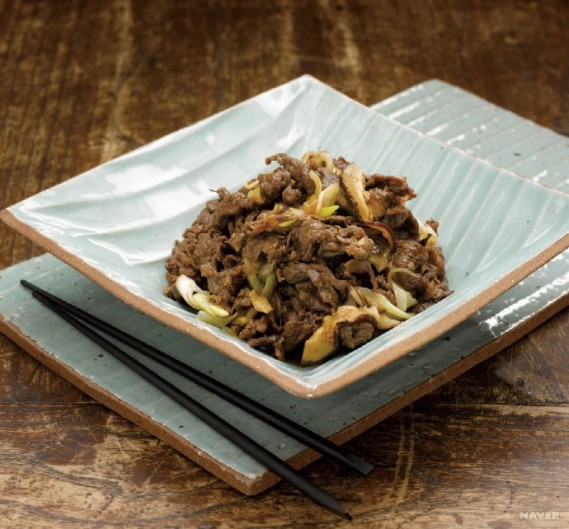

불고기는 수천 년 전부터 먹어온 전통 한식으로 조상들의 다양한 지혜가 담긴 바비큐 요리다. 불고기는 얇게 썬 쇠고기를 양념장에 무쳐서 석쇠에 구워 먹는 음식이다. 예전에는 너비아니라고 불렀다. 너비아니란 궁중과 서울의 양반집에서 쓰던 말로 고기를 넓게 저몄다는 뜻이다. 기호에 따라 조금만 익히거나 바싹 구워서 먹는다.
불고기는 진간장, 꿀, 다진 파, 다진 마늘, 후춧가루로 만든 양념장에 고기를 재웠다가 굽는데 달착지근한 맛이 일품이다. 외식 메뉴가 지금처럼 다양하지 않았던 시절, 특별한 날이나 모임이 있을 때면 불고기를 많이 먹었다. 불고기판에 육수가 자작한 불고기가 지글지글 끓으면 어른들은 고기 안주에 소주를 마시고 아이들은 달큼한 고기 국물에 밥을 비벼 먹었다.